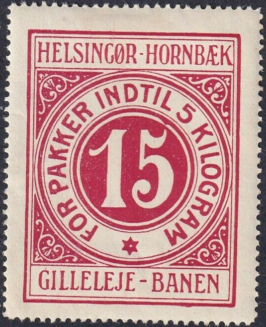
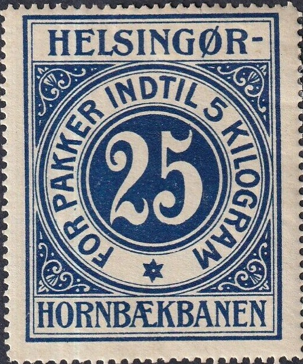
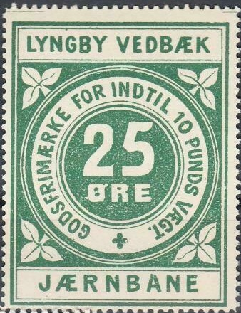
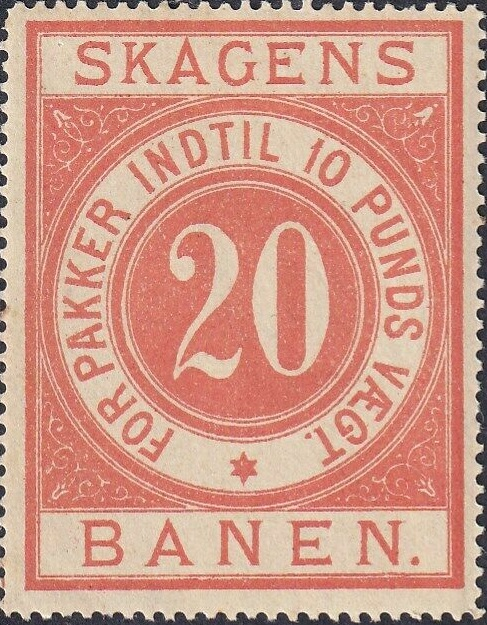
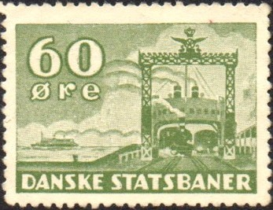

1875 "DE DANSKE STATSBANER 10 PUNDS" 20 o blue and 1903(?) "DANSKE STATSBANER 5 KILOGRAM" 25 o red. Also a 35 o green ("5 KILOGRAM", 1917)
Return To Catalogue - Denmark - Denmark Miscellaneous - Aabenraa to Amagerbanen - Bornholmske to Horsens Vestbaner - Bornholmske to Helsingor -Hillerod to Horsens-Bryrupbanen - Horsens-Bryrup-Silkeborg to Horsens Vestbaner - Horve Vaerslev to Kolding Sydbaners - Langelandsbanen to Nordvestfyenske - Odense - Kerteminde - Dalby to Ronne Nexo - Silkeborg-Herning to Sydfyenske - Thisted-Fjerritslev to Vodskov-Ostervraa
Note: on my website many of the
pictures can not be seen! They are of course present in the
catalogue;
contact me if you want to purchase it.
1875 "DE DANSKE STATSBANER 10 PUNDS" 20 o blue and
1903(?) "DANSKE STATSBANER 5 KILOGRAM" 25 o red. Also a
35 o green ("5 KILOGRAM", 1917)
   
Other railway companies with similar design stamps.

DSB: Similar design, but inscription
"SUPPLEMENTSMAERKE": 10 o brown. I've seen it with a
1917 cancel.

"DANSKE STATSBANER SUPPLEMENTSMARKE TIL ET 20 ØRES
FRIMAERKE": brown


Larger sized stamps with value in the center and "DANSKE
STATSBANER" inscription and also smaller sized stamps in the
same design.
In the larger size exist:
15 o orange, 25 o red, 45 o green, 60 o blue and 90 o brown
(large size)
Overprints: "30" on 45 o green, "30" on 90 o
brown, "90" on 15 o orange (see image above)
and in the smaller size the following values
exist:
25 o red, 30 o orange, 40 o blue, 50 o blue, 60 o green, 75 o
green, 90 o brown and 100 o brown.
'large' overprint: "10" on 25 o red, "10" on
30 o violet (see image above), "10" on 60 o blue,
"10" on 100 o brown, "15" on 25 o red (see
image above), "15" on 75 o green
'smaller' overprint: "25" on 30 o orange,
"75" on 90 o brown (see image above).
Inscription "DSB" (Danske Stats Baner; Danish State Railways):


1913(?) (the earliest cancel I've seen is from
1913), they were still in use in the 1960's
I have seen the values 5 o grey, 7 o red, 10 o brown, 20 o brown,
30 o green, 40 o grey, 40 o yellow, 40 o blue, 50 o yellow, 50 o
brown, 50 o red, 60 o red, 70 o brown, 80 o violet, 90 o red, 90
o violet, 100 o orange, 100 o blue, 120 o yellow, 200 o green
Also the following surcharges: "7" on 5 o grey (1920),
"10" on 7 o red, "25" on 200 o light green
(1937), "35" on 80 o violet (1932), "40" on
50 o yellow, "120" on 40 o yellow (1952),
"150" on 120 o yellow (1952) and "10 kr."
(vertically) on 30 o green (see image above).

An overprint "RUTEBILPK." (bus route,
1937?) has been applied on at least the following values: 50 o
red and 100 o blue.
Also "25" on 200 o green, "35" on 80 o
violet,"75" on 170 o orange,

Value in an ellipse (size as the previous stamp but value in an
ellipse), 500 o lilac. Also larger, I have seen 10 o yellow, 15 o
red, 25 o green and 75 o lilac; "20" on 20 o grey. I
presume the larger stamps were supposed to be pasted on the
parcel and the smaller stamps on the receipts.

"1847-1947": I've seen 60 o blue (steamtrain), 90 o
green (ferry boat), 120 red (railway carriage)




1951 ferry
In the ferry design: 100 o blue, 120 o blue; "100" on 120 o blue.

1955 issue, signal, approaching train, Signalling box with alarm
bell(?), railway bridge, joining mechanism between trains and
trainwheel designs.
In the 1955 signal design I have seen: 150 o
blue, 150 o lilac, 175 o brown; "5" on 175 o brown,
"150" on 180 o brown, "180" on 100 o brown.
In the approaching train design: 200 o red, 200 o blue
(perforated on two sides only).
In a trainwheel design: 25 o light brown, 120 o orange, 125 o
green (perforated on all sides, or only perforated at the sides),
125 o olive; "120" on 125 o brown
Joining mechanism between two trains: 50 o blue, 60 o blue, 225 o
blue (two types, "2" different, perforated only on th
sides); "50" on 60 o blue.
Signalling box with alarm bell(?): 75 o olive, 90 o olive,
"70" on 90 o olive, "80" on 70 o olive,
"90' on 75 o olive.
Railway bridge: 75 o lilac (perforated on two sides only), 75 o
blue (perforated on two sides only), 90 o green, 110 o lilac;
"90" on 110 o lilac, "110" on 75 o lilac;
"5" on 90 o green.
Parcel with tire tracks in front and railway tracks in the
background.
1970's(?) Parcel with tire tracks in front and
railway tracks in the background:
With perforation all around:
25 o grey, 30 o orange, 75 o orange, 110 o brown, 330 o blue, 340
o blue, 400 o blue, 420 o blue, 440 o violet, 450 o violet, 500 o
blue (see image above), 520 o violet.
Overprinted: "20" and checkered pattern on 400 o blue,
"20" and checkered pattern on 500 o violet,
"30" and checkered pattern on 110 o brown,
"40" and checkered pattern on 450 o violet,
"340" and checkered pattern on 330 o blue,
"440" and checkered pattern on 225 o violet,
"450" and checkered pattern on 440 o violet,
"50" and four bars on 340 o blue, "50" and
four bars on 540 o violet, "100" and four bars on 70 o
orange, "330" and four bars on 25 o grey,
"150" and four bars on 225 o blue, "175" and
four bars on 150 o violet, "250" and four bars on 225 o
blue, "330" and four bars on 300 o blue
With perforation on top and bottom only with control number at
the bottom:
75 o red, 250 o blue, 330 o blue, 340 o blue, 400 o blue, 440 o
lilac, 450 o lilac, 500 o blue, 550 o brown, 560 o brown, 600 o
brown, 600 o lilac, 670 o green, 700 o brown, 800 o green, 900 o
orange.
Taller design with "EKSPRES" added at the bottom: 110 o
red (perforated at all four sides or only top and bottom),
"110" on 100 o red (see image above).

Diverging railway tracks, inscription "DSB"
1980's(?) In the above diverging railway tracks
design I have seen:
1 kr black, 2 kr grey and red, 3 kr green and red, 4 kr blue and
red, 5 kr black. 10 kr red, 15 kr red, 18 kr orange, 21 kr green,
24 kr yellow, 25 kr blue, 30 kr yellow, 30 kr red, 34 kr light
blue, 35 kr green, 40 kr brown, 45 kr lilac, 50 kr grey, 100 kr
red and black
{kind=link}
{kind=link}
{kind=link}
{kind=link}